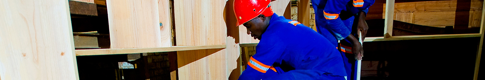

|
| CIMERWA school |
| This school started in January 2003 with 64 Students. It now has 453 students distributed across 15 classes from nursery to primary level. The school has 14 teachers and a headmaster. Over the last 3 years, the school has ranked highly, coming second in student’s performance in the national exam results in Rusizi district. The school offers nursery and primary education for the children of employees as well as the clocal community. CIMERWA spent 123.8 million Rwandan Francs on the School in 2008, and will be expanding the capacity of the school to include 3 years of high school education in response to a growing demand from parents who want their children to complete their schooling careers to a secondary level. Parents are closely involved in the management of the school and they are represented in the school management committee. |
| CIMERWA clinic |
| CIMERWA Clinic was established at the plant premises in 1984 when it was commissioned. It includes a pharmacy, a 13-bed hospital and a laboratory manned by trained staff. It has grown, over time, with the addition of new services like family planning, HIV care, and immunization with vaccines provided by the Government. It now has a staff of 11, including a physician, two lab technicians, seven nurses and a cashier. In addition to the staff of the plant and their dependents, the Health Center is open to the local population who pay a subsidized consultation fee and the medicines are made available to them at cost price. The clinic is constantly growing and has now acquired a brand new ambulance that will also be used in community outreach programs organized by the clinic. |
| Knitting |
| During one of CIMERWA’s meetings with the community, a young girl sat quietly, knitting a scarf with so much ease oblivious of the meeting’s proceedings to the admiration of others. This drew the attention of the company’s staff that saw not only a hobby at display but also a business opportunity. Two months later, a knitting project has been initiated and membership has risen to more than 20 of school going and recent graduate girls. The group meets during their free time under the coordination and mentorship of CIMERWA school teachers. They recently got their first big order of 20 scarves from South Africa. CIMERWA will continue hosting the project, provide technical skills and market the finished products. This is the beginning of a journey to economic empowerment for the girls and their families. |
| Tailoring |
| CIMERWA recognized that as the need for tailored outfits for use around the factory emerged, the tailors in the community next to the plant would be a key source of the finished work. Local tailors organized themselves and approached CIMERWA management for support. The management was impressed and gave the tailors their first opportunity during the company’s 30th anniversary celebrations in October 2014 when they were tasked to produce 128 graduation gowns within four days for kindergarten and primary students of the CIMERWA School. The group of tailors took up the challenge, each one working independently but under the guidance of someone from CIMERWA and eventually delivered within the set timelines. We have committed to continue building their tailoring skills and to give them more work by contracting more outfits from them. |
| Poultry |
| The three-month old project was an idea of the youth of Bugarama. They came together after graduating from school and expressed the intent to start a business. Consulting with the CIMERWA team enabled them to refine their business idea. With $400 as seed capital the group of 20 youths invested in chicks that have now blossomed into an organized chicken rearing project. Their aim is to produce yellow eggs whose demand is high. Some of the group’s members are graduates from veterinary colleges with knowledge on animal health and nutrition. The poultry project already has a ready market that includes the CIMERWA’s staff and canteen. The challenge will be to satisfy the market |
| Carpentry |
| The carpentry project was borne out of a need within the company to make better use of the well-equipped carpentry workshop. Since the company needed furniture, an opportunity to hire and train local carpenters emerged. So far a number of volunteers have presented themselves for training as carpenters and are learning on the job as they produce furniture for CIMERWA and the local community. Besides providing a full time job for the trainer, the trainees are also offered a monthly stipend while undertaking the lessons. Upon graduation, CIMERWA plans to absorb them. The progress of the project is remarkable. The trainees have made furniture that is now being used by the company. |
|  |
| Home | About | Products | Sustainability | Projects | Pressroom | Careers | Contacts | Connect with us |  |
|
| Who we are |
About Board of Directors Management |
Products CIMERWA 42.5 CIMERWA 32.5 |
Sustainability CSR |
Projects | Pressroom Gallery | Careers Gallery | Contact us | |||